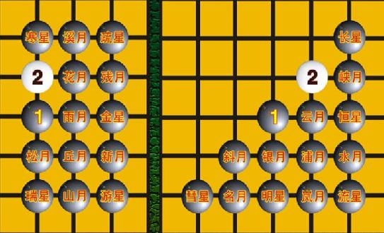
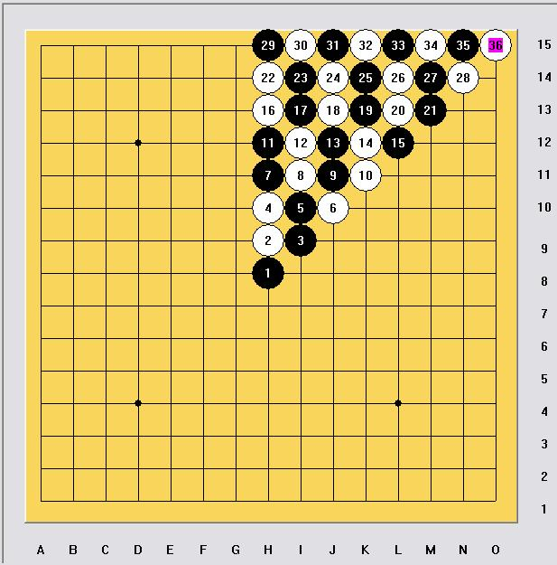
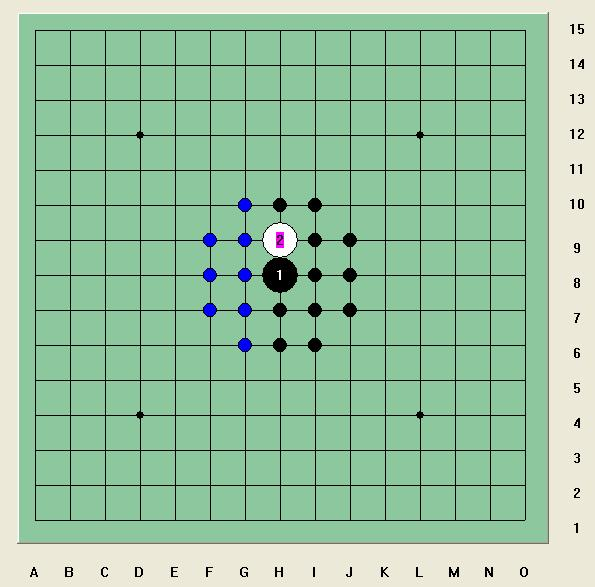

星月26个开局“选妃标准”的个人看法（极限辐射说）
#1 星月26个开局“选妃标准”的个人看法（极限辐射说） 作者：岳麓小棋后 发表时间：2009-2-15 23:18:37
瑞星为什么不叫松月刀？寒星刀、溪月刀……等为什么被打入冷宫？星月26个开局的“选妃标准”科学吗？星月26个开局的“选妃标准”是什么？挺大的一个题目，个人能力有限，实在不是我能写的，但是一直都有这个疑问，上网也找了很多26个开局划分的依据，于是找到了星月取名的规则如下。
“命名规则：
桂：桂马打，黑1、黑3成马步，“日”字形，以“月”命名。如“溪月”、“水月”。“新月”和“名月”统称桂马打的入门定式。
间：间打，黑1、黑3在一条直线上或一条斜线上，间隔一点，以“星”命名。如“寒星”、“长星”。
连：连打，黑1、黑3在一条直线上或一条斜线上，无间隔，以“月”命名。如“花月”，“云月”“浦月”。”
按这个命名规则，于是有了：

在这个命名规则下直止开局集合为一个矩形，斜止开局集合为一个三角形。这就是星月26个开局的“选妃标准”。现在我们要问星月26个开局的“选妃标准”科学公平吗？
这个问题其实挺难回答的，因为这个“选妃标准”有其科学的一面，也有其不公平的一面，尤其是在人为严重干预的今天（注意：人为严重干预有时并不是一件坏事，市场经济也是需要国家宏观调控的）。
关键在于这个“选妃标准”，其实是一笔糊涂帐，这笔糊涂帐让我想起了五子棋发展历史上另一笔更为“霹雳”的糊涂帐，是什么？
五子棋就像一位被恶魔囚禁起来的美丽公主，等待勇士的拯救。由第一手天元最强引发的黑先行必胜行将颠覆这个襁褓中的棋种，于是出现了这笔糊涂帐，用意也是相当好的，RIF规则横空出世，这笔糊涂帐就是用 黑单方禁手来中和先行方的这种天元优势，当然后来发现单方禁手依然不能免除先行方必胜的事实，又出现了三手交换和五手两打，可以说这种拯救方法是一笔糊涂帐，它用逐渐逼近的方法让倾斜的天平又一点一点地平衡起来，值得一说的是，这笔糊涂帐算到今天已经基本快算清了，由这笔糊涂帐导致的结果就是五子棋可下的变化越来越少。我们的公主又在等待糊涂的勇士了！
回到正题，这个“选妃标准”其实有点木，按皇帝的说法就是，“这个妃子为什么只能在皇亲贵族里挑呀，民间没有奇女子吗，江南没有靓姑娘吗？非得要淑女吗，妖娆点的不行吗？”
但是这个“选妃标准”还是真有其科学依据的，五子棋是一种发展与限制的棋种，讲究发散与连接。这个图我们见过，是白2理论上强弱分布规律，黑3也是一样的道理。

以直止2来看黑3的强弱分布规律

不考虑五手两打，这一圈的黑点基本都是必胜的，再出去就是相互纠缠的平衡局面，再出去都是黑必败的局面。这一点让我想起门捷列夫的元素周期表，门捷列夫通过元素周期表预测了很多未知道的新元素，五子棋其实好好想想，也许也有这样的“元素周期率”。个人研究很窄，很多结论只能假设，比如说斜月一打是否必胜，这个很难，假如银月、明星、名月一打必胜，那么夹在其中的斜月一打必胜的概率应该是很高的。
/*760*90，创建于2012-2-9*/ var cpro_id = 'u761865';
#2 Re:星月26个开局“选妃标准”的个人看法（极限辐射说） 作者：茗弈小刀 发表时间：2009-2-16 18:16:24
赞一个！妹妹这个论点 学术性好强！得认真看才看懂哟。
学术性好强！得认真看才看懂哟。
岳飞英明再现
麓山枫叶红遍
小楼深处奇女
棋坛高谈阔见
后浪必推前浪
好恋五目不倦
［本站用户 gerbo 于 2009-3-15 4:28:46 花5个金币送您鲜花一朵］
#3 Re:星月26个开局“选妃标准”的个人看法（极限辐射说） 作者：举步回眸浅浅笑 发表时间：2009-2-16 18:22:00
 说得好棒
说得好棒
#4 Re:星月26个开局“选妃标准”的个人看法（极限辐射说） 作者：雅典娜 发表时间：2009-2-16 18:29:14
讲得好好!
#5 Re:星月26个开局“选妃标准”的个人看法（极限辐射说） 作者：飞哥 发表时间：2009-2-16 18:33:46
赞一个，太强了#6 Re:星月26个开局“选妃标准”的个人看法（极限辐射说） 作者：雅匪 发表时间：2009-2-16 18:40:49
标题比较精彩，学术又不失生动#7 Re:星月26个开局“选妃标准”的个人看法（极限辐射说） 作者：小枫叶 发表时间：2009-2-16 19:18:27
写得很好呀！留着细看！#8 Re:星月26个开局“选妃标准”的个人看法（极限辐射说） 作者：罗马王子 发表时间：2009-2-16 22:26:39
写得好详细哦。强！
#9 Re:星月26个开局“选妃标准”的个人看法（极限辐射说） 作者：南京小飞机 发表时间：2009-2-16 23:21:56
小棋后啊 看你很多文章，我真怀疑你是不是初学者
#10 Re:星月26个开局“选妃标准”的个人看法（极限辐射说） 作者：南京小飞机 发表时间：2009-2-16 23:23:32
文笔这么好，强烈要求小棋后写个五子棋短篇小说
#11 Re:星月26个开局“选妃标准”的个人看法（极限辐射说） 作者：弱小的无尾猫 发表时间：2009-2-17 8:22:06
顶！
感觉这个理论确实是有一定科学依据的。而且还可以从中反映出，“攻聚内力”的道理。总体来说，我认为现行规则下“直线型开局”（不是直指开局，指的是黑1，3的连接方式）黑棋攻击力更强（两个黑必败局和白优的长星、游星等都是“斜线型开局”），配合上文提到的“元素周期表理论”（可广义理解为空间的构型），我们确实可以进一步推出“未知开局棋形”的优劣。
#12 Re:星月26个开局“选妃标准”的个人看法（极限辐射说） 作者：快乐天羽 发表时间：2009-2-18 13:34:30
分析的很有道理。鼓励一下，如果你对这些开局的结论都知道的更清楚些，也许你分析的会更精辟。你的理论在很多变化的拆解上似乎可以作为指导思想的。
#13 Re:星月26个开局“选妃标准”的个人看法（极限辐射说） 作者：岳麓小棋后 发表时间：2009-2-18 17:25:37
QQ号694250610，谢谢大家一如既往的支持#14 Re:星月26个开局“选妃标准”的个人看法（极限辐射说） 作者：闫荣辉 发表时间：2009-2-18 17:27:34
支持一下棋后的原创!
#15 Re:星月26个开局“选妃标准”的个人看法（极限辐射说） 作者：超级菜鸟徒弟 发表时间：2009-2-20 13:20:38
就是记不住这些开局,好好学习一下.
#16 Re:星月26个开局“选妃标准”的个人看法（极限辐射说） 作者：茗弈出埃及记 发表时间：2009-2-26 9:35:49
才发现星、月是这么分的。。。佩服啊大姐头~~~~~~~~
#17 Re:星月26个开局“选妃标准”的个人看法（极限辐射说） 作者：飞哥 发表时间：2009-2-26 16:28:16
很好！很强大！#18 Re:星月26个开局“选妃标准”的个人看法（极限辐射说） 作者：茗芗 发表时间：2009-2-26 21:50:25
师姐,你太强悍了!#19 Re:星月26个开局“选妃标准”的个人看法（极限辐射说） 作者：飞哥 发表时间：2009-2-26 22:27:24
小棋后写的东西看了还有点耐人寻味，赞！#20 Re:星月26个开局“选妃标准”的个人看法（极限辐射说） 作者：茗弈小刀 发表时间：2009-2-28 12:22:54
妹妹可以再写一篇。
#21 Re:星月26个开局“选妃标准”的个人看法（极限辐射说） 作者：竹子 发表时间：2009-3-1 0:00:47
为什么日本连珠当初放弃了大桂间开局（妖刀开局），大家有《五珠定石》的话，可以看看后面的《日本连珠史》，里面有叙述的，虽然是日文（其实和中文繁体字差不多，能看出个大概意思来。）#22 Re:星月26个开局“选妃标准”的个人看法（极限辐射说） 作者：有志青年 发表时间：2009-3-1 12:51:21
嘿嘿，竹子直接说出来撒，不要卖关子哟#23 Re:星月26个开局“选妃标准”的个人看法（极限辐射说） 作者：梦在哪 发表时间：2009-3-6 14:46:04
学习了，刀姐什么时候也给我写首藏头诗吧。
#24 Re:星月26个开局“选妃标准”的个人看法（极限辐射说） 作者：雅典娜 发表时间：2009-3-7 8:32:46
辐射这么深的道理,也被你研究出来啦,
#25 Re:星月26个开局“选妃标准”的个人看法（极限辐射说） 作者：小枫叶 发表时间：2009-3-7 9:44:43
写得很好呀，我会细细品味的！强！！！！！！！！！！#26 Re:星月26个开局“选妃标准”的个人看法（极限辐射说） 作者：淡月疏星 发表时间：2009-3-9 18:01:42
比较喜欢小棋后这篇。#27 Re:星月26个开局“选妃标准”的个人看法（极限辐射说） 作者：琦玉 发表时间：2009-3-9 22:08:24
强！顶起！
#28 Re:星月26个开局“选妃标准”的个人看法（极限辐射说） 作者：茗奕的飞猪 发表时间：2009-3-10 19:27:12
小棋后最近怎么没看到，结果躲这里来了，哈哈！
#29 Re:星月26个开局“选妃标准”的个人看法（极限辐射说） 作者：左伟光 发表时间：2009-3-11 13:53:03
好文章！顶起！#30 Re:星月26个开局“选妃标准”的个人看法（极限辐射说） 作者：坏蛋色色色 发表时间：2009-3-11 14:15:32
2篇我比较喜欢这篇。
#31 Re:星月26个开局“选妃标准”的个人看法（极限辐射说） 作者：木木夕 发表时间：2009-3-12 19:18:35
谢谢岳麓小棋后老师。#32 Re:星月26个开局“选妃标准”的个人看法（极限辐射说） 作者：坏蛋色色色 发表时间：2009-3-13 10:56:27
顶起，小棋后加油！
#33 Re:星月26个开局“选妃标准”的个人看法（极限辐射说） 作者：雅典娜 发表时间：2009-3-14 13:20:40
支持永远米有终点!
#34 Re:星月26个开局“选妃标准”的个人看法（极限辐射说） 作者：木木夕 发表时间：2009-3-14 20:44:56
怎一个强字了得！
#35 Re:星月26个开局“选妃标准”的个人看法（极限辐射说） 作者：飞哥 发表时间：2009-3-17 15:06:04
小棋后,ni ----------是最棒的！#36 Re:星月26个开局“选妃标准”的个人看法（极限辐射说） 作者：木木夕 发表时间：2009-3-17 21:18:14
很好，很强大！#37 Re:星月26个开局“选妃标准”的个人看法（极限辐射说） 作者：妙玉偷星 发表时间：2009-3-18 12:17:39
支持下！
#38 Re:星月26个开局“选妃标准”的个人看法（极限辐射说） 作者：飞哥 发表时间：2009-3-19 10:13:41
小棋后真棒写的！#39 Re:星月26个开局“选妃标准”的个人看法（极限辐射说） 作者：独爱五子连珠 发表时间：2009-3-20 9:26:27
大家都支持你！#40 Re:星月26个开局“选妃标准”的个人看法（极限辐射说） 作者：刀魂 发表时间：2009-3-20 13:37:49
学术性 好强啊。。。果然是 茗奕 的 高手，，，，
祝 茗奕 这次联盟赛 取得 好成绩。。。
#41 Re:星月26个开局“选妃标准”的个人看法（极限辐射说） 作者：掌棋盟天地一沙鸥 发表时间：2009-3-20 22:42:44
来学习了#42 Re:星月26个开局“选妃标准”的个人看法（极限辐射说） 作者：淡月疏星 发表时间：2009-4-2 13:15:46
好文章！顶！#43 Re:星月26个开局“选妃标准”的个人看法（极限辐射说） 作者：天逸乄西西 发表时间：2009-4-3 23:53:25
请作者加群:27122239
(加群时请说明是参赛者,谢谢)
爱五子棋网-原创文学活动宣
2009年4月3日
#44 Re:星月26个开局“选妃标准”的个人看法（极限辐射说） 作者：独爱五子连珠 发表时间：2009-4-4 9:32:21
学习了，谢谢！#45 Re:星月26个开局“选妃标准”的个人看法（极限辐射说） 作者：冰清 发表时间：2009-4-10 13:45:09
小棋后加油！
#46 Re:星月26个开局“选妃标准”的个人看法（极限辐射说） 作者：坏蛋色色色 发表时间：2009-4-10 15:09:48
 加油！！俺看好你！
加油！！俺看好你！
#47 Re:星月26个开局“选妃标准”的个人看法（极限辐射说） 作者：醉了 发表时间：2009-4-11 11:41:17
好文章，学习，谢谢。#48 Re:星月26个开局“选妃标准”的个人看法（极限辐射说） 作者：琦玉 发表时间：2009-4-11 13:36:33
好深奥，慢慢学吧，谢谢老师。#49 Re:星月26个开局“选妃标准”的个人看法（极限辐射说） 作者：岳麓小棋后 发表时间：2009-10-27 17:05:51
主帖已坏，申请恢复